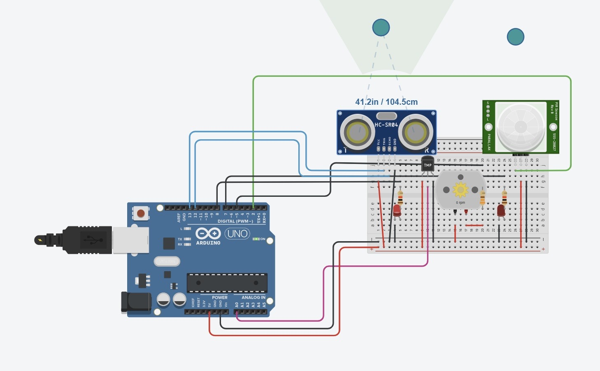
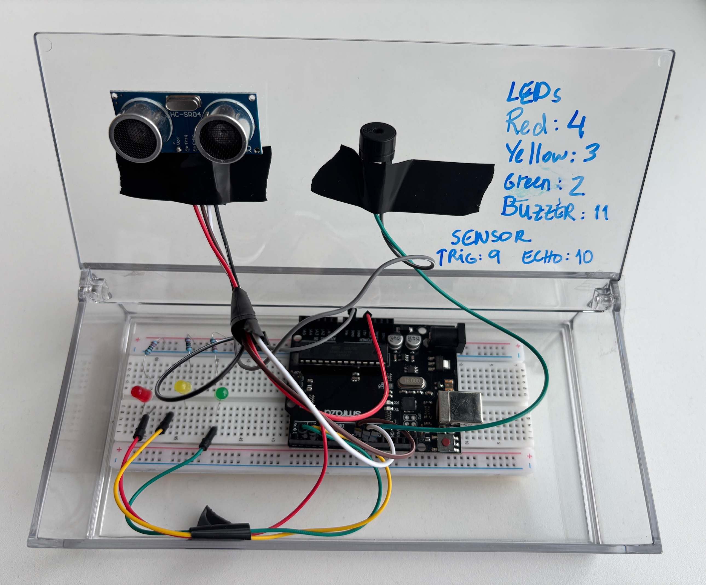

Course: TECH 117 (Computer Engineering Technology, Fall 2025)
Instructor: Ph.D. Ana Rodrigues
Team Members:
One real-world issue that many households face is unnecessary electricity consumption. People sometimes forget to switch off lights and fans when leaving a room, which leads to wasted electricity and higher electricity bills. Another issue is that people have to manually control their electrical appliances, which can be inconvenient. Therefore, there is a need for a smart home system that can automatically control electrical appliances to save energy and make everyday life easier.
The problem is that traditional home electrical systems depend on people to manually switch lights and fans on or off. This can result in unnecessary electricity usage, increased costs, and inconvenience. The proposed solution is to develop a smart home automation system that uses sensors to detect human presence, room temperature, and light levels. The system will automatically switch lights on or off depending on room occupancy and lighting conditions. It will also control fans according to the room temperature, helping to improve comfort and reduce electricity waste.
The project needs to measure room temperature, and monitor light levels using sensors. It should automatically control lights and fans based on the information collected from these sensors. The main goal is to improve energy efficiency, provide comfort, reduce electricity bills, and make home management easier. The project will be considered successful if the sensors provide accurate readings, the lights and fans respond correctly to changes in the environment, and the system operates reliably. Other important factors for evaluating success include reducing unnecessary electricity consumption, responding quickly to sensor information, and allowing manual control when needed.
Some challenges that might make the project difficult to complete include limited time, technical problems, sensor errors, and a lack of programming or hardware knowledge. There may also be difficulties connecting the different components and ensuring that they work together correctly. To overcome these challenges, the most important features will be developed first, sensors will be tested regularly, and spare components will be kept available. Manual switches will also be included as a backup, while the basic functions of the system will be designed to work without an internet connection whenever possible.

| Item | Qty | Unit Price | Subtotal | Source |
|---|---|---|---|---|
| Arduino Uno Rev3 | 1 | $27.60 | $27.60 | Arduino Store |
| Temprature Sensor | 1 | $6.50 | $6.50 | Adafruit |
| Ultra Sonic Distance Sensor | 1 | $5.09 | $5.09 | SparkFun |
| LEDs (Red, Red) | 2 | $0.20 | $0.40 | Adafruit |
| 1K Ω Resistors | 2 | $0.16 | $0.32 | Adafruit |
| Breadboard | 1 | $4.95 | $4.95 | Adafruit |
| PIR Sensor | 1 set | $4.99 | $4.99 | Canadarobotix |
| DC Motor | 1 | $5.11 | $5.11 | RobotShop |
| Estimated Total | $41.64 | — | ||
The following image shows the assembled prototype on a breadboard.

The following Arduino code controls the system, lighting LEDs and activating the fan based on temprature readings
// Collision Warning System with Distance Sensor (HC-SR04)
// Author: Ana Rodrigues
// Oct 2, 2025
// Object is farther than 50cm: Green LED lights up
// Object is closer than 50 cm, but more than 10cm away: Yellow LED lights, buzzer plays 300Hz tone
// Object is closer than 10cm: Red LED lights up, buzzer plays 500Hz tone
//LED pins
const int greenLED = 2;
const int yellowLED = 3;
const int redLED = 4;
// Ultrasonic sensor pins
const int trigPin = 9;
const int echoPin = 10;
// Passive buzzer pin
const int buzzer = 11;
void setup() {
pinMode(greenLED, OUTPUT);
pinMode(yellowLED, OUTPUT);
pinMode(redLED, OUTPUT);
pinMode(trigPin, OUTPUT);
pinMode(echoPin, INPUT);
Serial.begin(9600);
}
void loop() {
// Measure distance
digitalWrite(trigPin, LOW);
delayMicroseconds(2);
digitalWrite(trigPin, HIGH);
delayMicroseconds(10);
digitalWrite(trigPin, LOW);
long duration = pulseIn(echoPin, HIGH);
long distance = duration * 0.034 / 2;
Serial.print("Distance: ");
Serial.print(distance);
Serial.println(" cm");
//Error in measurement:
if (distance <= 0)
return;
//Too close:
if (distance <= 10) {
digitalWrite(greenLED, LOW);
digitalWrite(yellowLED, LOW);
digitalWrite(redLED, HIGH);
tone(buzzer, 500); // Play 500Hz tone
return;
}
//Midrange:
if (distance <= 30) {
digitalWrite(greenLED, LOW);
digitalWrite(yellowLED, HIGH);
digitalWrite(redLED, LOW);
tone(buzzer, 300); // Play 300Hz tone
return;
}
//Normal status:
digitalWrite(greenLED, HIGH);
digitalWrite(yellowLED, LOW);
digitalWrite(redLED, LOW);
noTone(buzzer); // stop buzzer
delay(100);
}
The system effectively demonstrates temprature-based alerting using Arduino. It’s affordable, educational, and sustainable through reusable components.